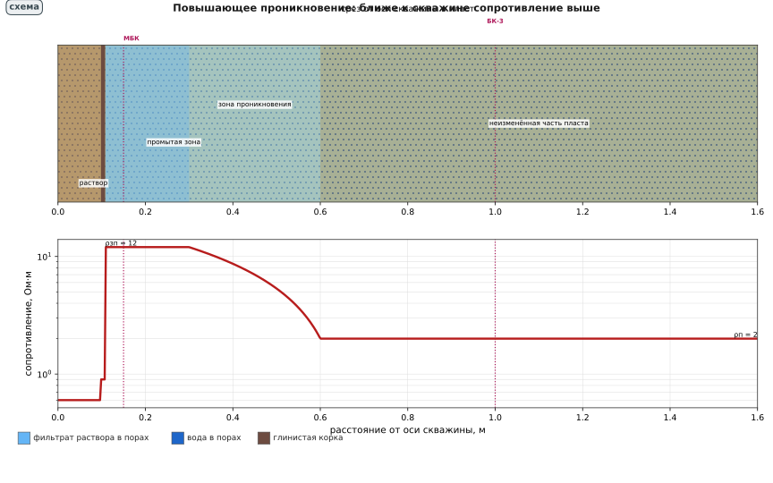

Стр. 96 · Терригенный разрез
Наличие радиального градиента сопротивления (повышающего или понижающего проникновения фильтрата глинистого раствора) устанавливают при интерпретации БЭЗ и диаграмм разноглубинных фокусированных зондов.
Построение разрезов скважин. Выделение коллекторов и оценка их продуктивности по данным ГИСШаг 15 из 34
В книге: «Радиальный градиент сопротивления и динамические методы выделения коллекторов» стр. 96
Опирается на: шаг 14 «Прямые признаки коллектора на диаграммах» (предпосылка), шаг 10 «Методы ГИС дополняют друг друга» (предпосылка)
Проникновение фильтрата видно по зондам разной глубинности: сопротивление меняется по мере удаления от скважины.
Если одного замера мало, наблюдают процесс во времени: зона проникновения формируется или расформировывается только в коллекторе.
Отсутствие заметного градиента сопротивления не значит, что коллектора нет.
Пороговая идея. Если один замер не различает коллектор, наблюдают процесс во времени: зона проникновения формируется или расформировывается только в коллекторе. модель
Определите, где наблюдение, вывод или допущение. Раскройте утверждение, чтобы свериться с ответом и цитатой.
Наблюдение · стр. 96
«устанавливают при интерпретации БЭЗ и диаграмм разноглубинных фокусированных зондов»
Наблюдение · стр. 96
«Радиальное изменение сопротивления четко устанавливают визуально по диаграммам экранированных зондов»
Наблюдение · стр. 96
«при повышающем проникновении ρₙМБК > ρₙБК, при понижающем ρₙМБК < ρₙБК»
Вывод · стр. 96
«Отсутствие заметного градиента сопротивления не является признаком, отрицающим коллектор.»
Вывод · стр. 96
«используются динамические методы их обнаружения»
Наблюдение · стр. 96
«с неизменными условиями в скважине — метод повторных замеров — или при смене скважинных условий — метод двух растворов»
Наблюдение · стр. 96
«Такие наблюдения в обсаженных скважинах с использованием нейтронных методов направлены на обнаружение газовых коллекторов»
Наблюдение · стр. 96
«Эти исследования широко применяются также и для выявления сложных коллекторов.»
Напомним: радиальный градиент сопротивления — это изменение сопротивления пласта от скважины вглубь. Его устанавливают по БЭЗ и по диаграммам разноглубинных фокусированных зондов. Проникновение бывает повышающим или понижающим. стр. 96
«устанавливают при интерпретации БЭЗ и диаграмм разноглубинных фокусированных зондов»

Нагляднее всего изменение сопротивления видно по экранированным зондам. Это микробоковой каротаж (МБК) — фокусированный микрозонд, который меряет прискважинную зону. И БК-3 — трёхэлектродный боковой зонд с большей глубинностью. стр. 96
«Радиальное изменение сопротивления четко устанавливают визуально по диаграммам экранированных зондов»
При повышающем проникновении сопротивление зоны проникновения выше, чем у пласта. Тогда показания МБК больше, чем БК. При понижающем проникновении показания МБК меньше, чем БК. стр. 96
«при повышающем проникновении ρₙМБК > ρₙБК, при понижающем ρₙМБК < ρₙБК»
Автор делает вывод: отсутствие заметного градиента сопротивления не отрицает коллектор. При некотором сочетании насыщения зоны и пласта и сопротивлений фильтрата и воды сопротивления зоны и пласта совпадают. стр. 96
«Отсутствие заметного градиента сопротивления не является признаком, отрицающим коллектор.»
Иногда по отдельным замерам коллектор не выделить. Тогда применяют динамические методы — смотрят, как показания меняются во времени. Следят за формированием или расформированием зоны проникновения. стр. 96
«используются динамические методы их обнаружения»
Вариантов два. Метод повторных замеров — повторяют один метод при неизменных условиях в скважине, например БЭЗ или комплекс фокусированных зондов. Метод двух растворов — замеры до и после смены промывочной жидкости. стр. 96
«с неизменными условиями в скважине — метод повторных замеров — или при смене скважинных условий — метод двух растворов»
В обсаженных скважинах такие наблюдения ведут нейтронными методами. Цель — найти газовые коллекторы по мере расформирования зоны проникновения. Динамические исследования широко применяют и для выявления сложных коллекторов. стр. 96
«Такие наблюдения в обсаженных скважинах с использованием нейтронных методов направлены на обнаружение газовых коллекторов»
«Эти исследования широко применяются также и для выявления сложных коллекторов.»
Ошибка: Если зоны проникновения нет, то пласт — не коллектор.
На самом деле: Сопротивления зоны и пласта могут совпасть; тогда помогают динамические методы. стр. 96
Сравнение зондов разной глубинности и сравнение замеров во времени — два «дифференциальных» признака коллектора.
Как сравнение двух снапшотов состояния: то, что не видно в одном снимке, проявляется в диффе между ними.
Где аналогия перестаёт работать: Между снимками меняются и условия измерения; дифф может отражать не пласт, а скважину.
Повторные (временные) замеры и сравнение зондов разной глубинности широко применяются и сейчас, в том числе в обсаженных скважинах.
Вставьте пропущенное слово.
При повышающем проникновении показания МБК , чем БК.
Верный ответ: При повышающем проникновении показания МБК [больше], чем БК.
Зона проникновения сопротивляется сильнее пласта, а МБК видит именно её. Где это в тексте (стр. 96) →
Верный ответ: Применяют динамические методы: наблюдают зону проникновения во времени
Формирование или расформирование зоны проникновения идёт только в коллекторе, поэтому смотрят изменение во времени. Где это в тексте (стр. 96) →
Все утверждения шага с дословной цитатой автора и страницей книги (по PDF).
Радиальный градиент сопротивления устанавливают по БЭЗ и разноглубинным фокусированным зондам. наблюдение
«устанавливают при интерпретации БЭЗ и диаграмм разноглубинных фокусированных зондов»
По экранированным зондам (МБК и БК-3) радиальное изменение сопротивления видно визуально. наблюдение
«Радиальное изменение сопротивления четко устанавливают визуально по диаграммам экранированных зондов»
При повышающем проникновении показания МБК больше, чем БК; при понижающем — меньше. наблюдение
«при повышающем проникновении ρₙМБК > ρₙБК, при понижающем ρₙМБК < ρₙБК»
Отсутствие заметного градиента сопротивления не означает, что пласт не коллектор. вывод
«Отсутствие заметного градиента сопротивления не является признаком, отрицающим коллектор.»
Если отдельные измерения не помогают, применяют динамические методы. вывод
«используются динамические методы их обнаружения»
Метод повторных замеров — наблюдение одним методом при неизменных условиях; метод двух растворов — при смене условий. наблюдение
«с неизменными условиями в скважине — метод повторных замеров — или при смене скважинных условий — метод двух растворов»
В обсаженных скважинах нейтронными методами ищут газовые коллекторы по расформированию зоны проникновения. наблюдение
«Такие наблюдения в обсаженных скважинах с использованием нейтронных методов направлены на обнаружение газовых коллекторов»
Динамические исследования широко применяют и для сложных коллекторов. наблюдение
«Эти исследования широко применяются также и для выявления сложных коллекторов.»
Стр. 96 · Терригенный разрез
Наличие радиального градиента сопротивления (повышающего или понижающего проникновения фильтрата глинистого раствора) устанавливают при интерпретации БЭЗ и диаграмм разноглубинных фокусированных зондов.
Стр. 96 · Терригенный разрез
Радиальное изменение сопротивления четко устанавливают визуально по диаграммам экранированных зондов (микро- и трехэлектродного БК-3): при повышающем проникновении ρₙМБК > ρₙБК, при понижающем ρₙМБК < ρₙБК.
Стр. 96 · Терригенный разрез
Отсутствие заметного градиента сопротивления не является признаком, отрицающим коллектор. Этот случай может соответствовать такому сочетанию коэффициентов насыщения в зоне проникновения и неизменной части пласта с отношением ρф/ρₙ, при котором по формуле(12) ρ₁₀/ρₙₙ = Pₙ₁₀ρф/Pₙρₙ.
Стр. 96 · Терригенный разрез
Когда выделение коллектора на основании отдельных измерений по какой-либо из упомянутых выше причин оказывается невозможным, используются динамические методы их обнаружения. В этом случае проводят наблюдение процессов формирования или расформирования зоны проникновения во времени каким-нибудь одним методом (БЭЗ, комплекс фокусированных зондов) с неизменными условиями в скважине — метод повторных замеров — или при смене скважинных условий — метод двух растворов. Такие наблюдения в обсаженных скважинах с использованием нейтронных методов направлены на обнаружение газовых коллекторов в процессе расформирования зоны проникновения. Эти исследования широко применяются также и для выявления сложных коллекторов.
На этот шаг опираются: шаг 26 «Газ проявляется не сразу».
Проникновение и повторные замеры
Ссылки в ответе ведут к исходному тексту.